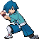
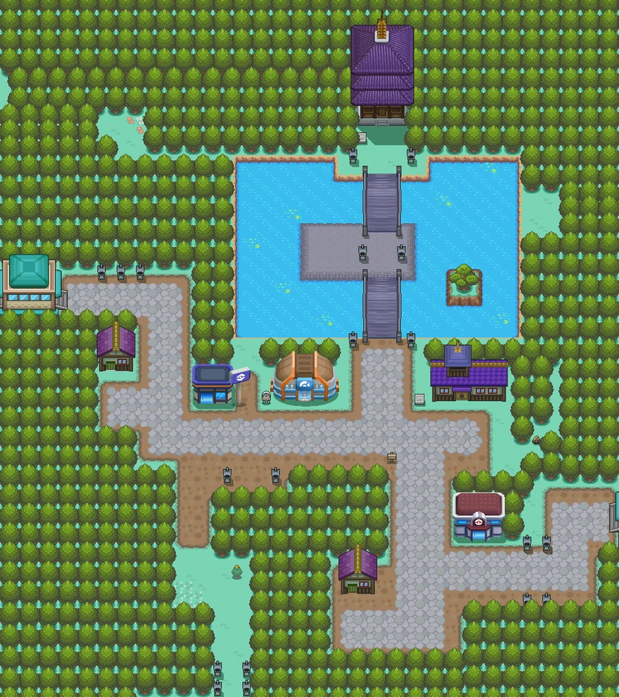
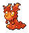
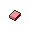
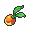
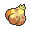
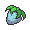
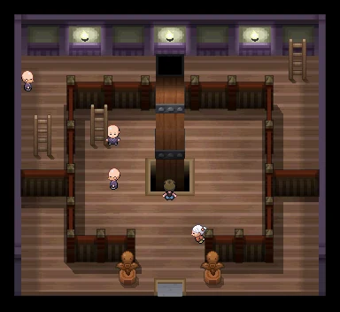
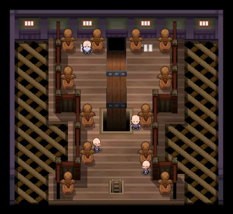
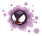

攻略大全 / 心金 / 魂银（详细图文） / 地图总览
31号道路 → 桔梗道馆
第 3 节 · 主线 · 途经 桔梗市、喇叭芽之塔

阿速31号道路
31号道路是一条短而弯曲的小路，连接30号道路和西边的桔梗市。道路东侧有个洞口通往黑暗洞穴，但没有特定的野外招式很难在里面行动。
训练家
- 捕虫少年 Wade₽32
 绿毛虫 Lv.2绿毛虫 Lv.2绿毛虫 Lv.2
绿毛虫 Lv.2绿毛虫 Lv.2绿毛虫 Lv.2 独角虫 Lv.3
独角虫 Lv.3
可遇到的宝可梦
- 绿毛虫仅心金草丛 · Lv.4-5 · 早 35% · 日 35% · 夜 0%
 铁甲蛹仅心金草丛 · Lv.5 · 早 15% · 日 15% · 夜 0%
铁甲蛹仅心金草丛 · Lv.5 · 早 15% · 日 15% · 夜 0%- 独角虫仅魂银草丛 · Lv.4 · 早 30% · 日 0% · 夜 0%
- 独角虫仅魂银草丛 · Lv.4-5 · 早 0% · 日 35% · 夜 0%
- 铁壳蛹仅魂银草丛 · Lv.5 · 早 10% · 日 15% · 夜 0%
 波波仅心金草丛 · Lv.3 · 早 30% · 日 30% · 夜 0%
波波仅心金草丛 · Lv.3 · 早 30% · 日 30% · 夜 0%- 波波仅魂银草丛 · Lv.5 · 早 10% · 日 0% · 夜 0%
- 波波仅魂银草丛 · Lv.4 · 早 0% · 日 30% · 夜 0%
 小拉达草丛 · Lv.4-5 · 早 0% · 日 0% · 夜 40%
小拉达草丛 · Lv.4-5 · 早 0% · 日 0% · 夜 40% 喇叭芽草丛 · Lv.3 · 20%
喇叭芽草丛 · Lv.3 · 20% 咕咕仅心金草丛 · Lv.5 · 早 0% · 日 0% · 夜 10%
咕咕仅心金草丛 · Lv.5 · 早 0% · 日 0% · 夜 10%- 咕咕仅魂银草丛 · Lv.4-5 · 早 0% · 日 0% · 夜 40%
 芭瓢虫仅魂银草丛 · Lv.4 · 早 30% · 日 0% · 夜 0%
芭瓢虫仅魂银草丛 · Lv.4 · 早 30% · 日 0% · 夜 0% 圆丝蛛仅心金草丛 · Lv.3 · 早 0% · 日 0% · 夜 30%
圆丝蛛仅心金草丛 · Lv.3 · 早 0% · 日 0% · 夜 30%
道具
 伤药黑暗洞穴外的告示牌附近
伤药黑暗洞穴外的告示牌附近 黑球果池塘西南边的树上（每天一次）
黑球果池塘西南边的树上（每天一次） 精灵球池塘和台阶的南边
精灵球池塘和台阶的南边- 对战记录器关口里，琴音/响给予
- 之后再来
- 招式学习器44（睡觉）把35号道路上朋友的烈雀送到之后，由池塘边的男人给予
熟悉的面孔
你走进关口时，琴音/响追了上来，纳闷你是怎么抢先一步的。对方送你一个对战记录器，可以录下宝可梦对战并分享给朋友，然后先去了桔梗市。
↓ 下一站：桔梗市
桔梗市

相邻→ 31号道路
桔梗市是一座被树木环绕的古老城镇，东边是31号道路，南边是32号道路，西边是36号道路。这里有宝可梦学校和桔梗道馆，是新手训练家常来的地方。小镇北边耸立着一座叫喇叭芽之塔的高塔。
可遇到的宝可梦
- 赠送的宝可梦
 波克比蛋 · Lv.1 · 1 只（拿到天空徽章后由空木博士的助手给的蛋，会神通力）
波克比蛋 · Lv.1 · 1 只（拿到天空徽章后由空木博士的助手给的蛋，会神通力） 咩利羊蛋 · Lv.1 · 1 只（Primo 给的蛋，需要输入专属密码）
咩利羊蛋 · Lv.1 · 1 只（Primo 给的蛋，需要输入专属密码） 乌波蛋 · Lv.1 · 1 只（Primo 给的蛋，需要输入专属密码）
乌波蛋 · Lv.1 · 1 只（Primo 给的蛋，需要输入专属密码）
熔岩虫蛋 · Lv.1 · 1 只（Primo 给的蛋，需要输入专属密码）- 特殊
 大岩蛇交换 · 与换出去的宝可梦同等级 · 1 只
大岩蛇交换 · 与换出去的宝可梦同等级 · 1 只
道具
 柿仔果交换得到的大岩蛇 Rocky 携带
柿仔果交换得到的大岩蛇 Rocky 携带 黄球果南边出口附近空地上的树上（每天一次）
黄球果南边出口附近空地上的树上（每天一次）- 精灵球喇叭芽之塔前那座灰色小岛的西侧（隐藏道具）
- 招式学习器51（羽栖）打败道馆馆主阿速后由他给予
- 之后再来
 厉害伤药宝可梦中心后面小路的尽头（隐藏道具，需要特殊能力）
厉害伤药宝可梦中心后面小路的尽头（隐藏道具，需要特殊能力） 神奇糖果东边湖对面的空地上（需要特殊能力）
神奇糖果东边湖对面的空地上（需要特殊能力） ＰＰ提升剂西边湖对面的空地上（需要特殊能力）
ＰＰ提升剂西边湖对面的空地上（需要特殊能力）
交换树果的人
宝可梦中心门前站着一个杂技人。你用碎片可以跟他换三种不同的树果，换到哪种取决于碎片的颜色。
| 碎片 | 树果组合 | 树果 | ||||||
|---|---|---|---|---|---|---|---|---|
 红色碎片 | 红色碎片 | A | 樱子果 | 桃桃果 |  苹野果 | 苹野果 | ||
| 蓝色碎片 | 蓝色碎片 | B | 橙橙果 | 零余果 | 零余果 | 异奇果 | 异奇果 | |
| 黄色碎片 | C | 利木果 | 文柚果 |  芭亚果 | 芭亚果 | |||
| 绿色碎片 | D |  莓莓果 | 莓莓果 | 木子果 | 木子果 | 乐芭果 | ||
宝可梦中心
去宝可梦中心，和电脑旁边的男人说话。他自我介绍叫 Primo，是电视节目《Show Me Show!》的主持人。他算是个小名人，会问你对他的看法。选出正确的词语组合，就能解锁电脑壁纸或拿到宝可梦蛋。一共有八种壁纸和三种蛋：咩利羊、乌波和熔岩虫。
交换宝可梦
宝可梦中心西南边的房子里有个男孩想交换宝可梦。他愿意用自己的大岩蛇换一只喇叭芽。31号道路和32号道路附近就能抓到喇叭芽。
Earl 的宝可梦学校
本地的宝可梦学校由一个叫 Earl 的男人经营，一开始他站在道馆和友好商店之间。和他说话，他会问你有没有打败本地道馆；回答没有，他就会一路转着圈把你带到学校。学校给经验不足的训练家讲解对战的基础知识。教室前面的黑板写着五种会影响宝可梦的异常状态：
| 异常状态 | 效果 | |
|---|---|---|
| 灼伤 | 灼伤 | 物理招式造成的伤害降到 50%；每回合损失最大 HP 的 1/8。火属性宝可梦不会灼伤。 |
| 冰冻 | 冰冻 | 解冻前无法行动（每回合有 20% 概率解冻）。冰属性宝可梦不会冰冻。 |
| 麻痹 | 麻痹 | 速度降到 25%；有 1/4 的概率无法攻击。地面属性宝可梦不会被电属性招式麻痹。 |
| 中毒 | 中毒 | 每回合损失最大 HP 的 1/8；在战斗外每走四步损失 1 HP。毒属性和钢属性宝可梦不会中毒。 |
| 睡眠 | 睡眠 | 一到四回合无法行动。 |
喇叭芽之塔



喇叭芽之塔是一座大宝塔，靠一根左右摇摆的柔韧柱子支撑。这种柔韧性让塔不怕地震，也象征着塔上层进行的对战。塔里住着潜心修行的和尚，他们教导说一切生命都靠合作共存。据说那根摇摆的柱子原本是一只 30 多米高的喇叭芽。
训练家
- 和尚 Nico₽144喇叭芽 Lv.3喇叭芽 Lv.3喇叭芽 Lv.3
- 和尚 Chow₽144喇叭芽 Lv.3喇叭芽 Lv.3喇叭芽 Lv.3
- 和尚 Edmond₽144喇叭芽 Lv.3喇叭芽 Lv.3喇叭芽 Lv.3
- 和尚 Jin₽288喇叭芽 Lv.6
- 和尚 Neal₽288喇叭芽 Lv.6
- 和尚 Troy₽336喇叭芽 Lv.7咕咕 Lv.7
可遇到的宝可梦
- 1F-3F
- 小拉达2F-3F · Lv.3-6 · 早 100% · 日 100% · 夜 0%
- 小拉达2F-3F · Lv.3, 5 · 早 0% · 日 0% · 夜 15%

鬼斯2F-3F · Lv.3-6 · 早 0% · 日 0% · 夜 85%
道具
- 1F
 解麻药北侧，东北楼梯的南边
解麻药北侧，东北楼梯的南边- 2F
 命中强化西南侧，西边楼梯的北边
命中强化西南侧，西边楼梯的北边- 3F
- 伤药楼梯西边
 离洞绳柱子东北边
离洞绳柱子东北边- 招式学习器70（闪光）打败长老阿李后由他给予
1F（中央）
塔有三层。一楼对游客开放，人们来这里参观这座塔独特的建造风格。经过摇摆的柱子，爬楼梯上 2F。
2F（东北）
往东走和和尚 Nico 对战，然后走楼梯回到 1F。
1F（北侧）
拿南边的解麻药。往西走和和尚 Chow 对战，然后爬上西边的楼梯。
2F（西南）
拿北边的命中强化，然后在西南角和和尚 Edmond 对战。爬南边的楼梯上 3F。
3F
拿西边的伤药。继续往北，和和尚 Jin、Neal、Troy 对战。
经过摇摆的柱子时，你会看到劲敌（ 西尔弗）刚刚打败了长老阿李。长老认可西尔弗作为训练家的实力，给了他一个招式学习器，但告诫他不要那样粗暴地对待宝可梦。这时西尔弗注意到了你，抱怨这位长老太弱。他显然没打算听长老的话，他只在乎能赢的强大宝可梦。说完他用离洞绳离开了塔。
西尔弗）刚刚打败了长老阿李。长老认可西尔弗作为训练家的实力，给了他一个招式学习器，但告诫他不要那样粗暴地对待宝可梦。这时西尔弗注意到了你，抱怨这位长老太弱。他显然没打算听长老的话，他只在乎能赢的强大宝可梦。说完他用离洞绳离开了塔。
拿东北角的离洞绳，然后和长老阿李说话。他欢迎你来到塔里，提出要考验你和宝可梦之间的羁绊。
对战长老阿李
阿李的两只喇叭芽是草属性，怕火属性和飞行属性的攻击，所以波波、咕咕和火球鼠都能轻松打倒它们。他的咕咕是飞行属性，被岩石属性的攻击打会受很大伤害。
长老 阿李 奖金 ₽1200
对战结束后，阿李会奖励你招式学习器70（闪光）。这个野外招式能照亮最黑暗的洞窟，但要在战斗外使用，得先打败桔梗道馆。
桔梗道馆

馆主：阿速
优雅的飞行宝可梦高手
桔梗道馆专精飞行属性宝可梦。飞行属性招式对虫、格斗、草属性效果绝佳，而飞行属性宝可梦怕电、冰、岩石属性的招式。
道馆一楼空荡荡的，只有一个木制平台会把挑战者送到上层。高台上有两名道馆训练家，不过有一条半透明的走道可以直接走到馆主面前。
阿速的比比鸟会用起风，能对虫属性和菊草叶这样的草属性宝可梦造成很大伤害。它不算最难打倒，但会用羽栖回复体力，比较耐打。飞行属性宝可梦对岩石属性的高防御几乎没办法；如果你跟那个男孩换了大岩蛇，用落石反击就能轻松获胜。
训练家
- 养鸟人 Abe₽288
 烈雀 Lv.9
烈雀 Lv.9 - 养鸟人 Rod₽224波波 Lv.7波波 Lv.7
道馆馆主 阿速 奖金 ₽1560
对战结束后，阿速会授予你天空徽章：20 级以下的宝可梦都会听你的话，并且能在野外使用碎岩。他还会送你招式学习器51（羽栖）作为奖励。
空木博士和蛋
你一走出道馆， 空木博士就打来电话，说他们发现了关于神奇蛋的一些事。他没细说，但希望你带着这颗蛋一起旅行。他告诉你他的助手就在附近的友好商店，请你去找他。
空木博士就打来电话，说他们发现了关于神奇蛋的一些事。他没细说，但希望你带着这颗蛋一起旅行。他告诉你他的助手就在附近的友好商店，请你去找他。
友好商店
空木博士的助手在柜台旁等你。答应博士的请求，他就把神奇蛋还给你。原来你离开研究所后，博士接到一通电话，很快就认定没有人比你更适合照顾这颗蛋。助手解释说，宝可梦要从蛋里成长、孵化，必须和其他活动中的宝可梦待在一起。说完他就回研究所了。
神秘的女孩
你走出友好商店时，遇到一位穿着和服的神秘女孩。她注意到了神奇蛋，看出它是从宝可梦爷爷那里传给空木博士、再传到你手上的。她说这是一颗重要的蛋，拜托你替她好好照顾，然后往南离开了。
↓ 本篇到此结束：继续下一页
原文：Bulbapedia《Walkthrough:Pokémon HeartGold and SoulSilver/Part 3》（修订版本 4486811，），作者见原文页面历史。本页由 Eli 的杂货间翻译为中文，并有改动（重新排版、精简部分图注）。原文与译文均以 CC BY-NC-SA 2.5 授权。配图来自原站，版权归原作者与游戏厂商；地图截图和人物图来自 Bulbagarden Archives，游戏画面版权归 Nintendo / Game Freak / The Pokémon Company。道具与属性图标来自 PokeAPI sprites。